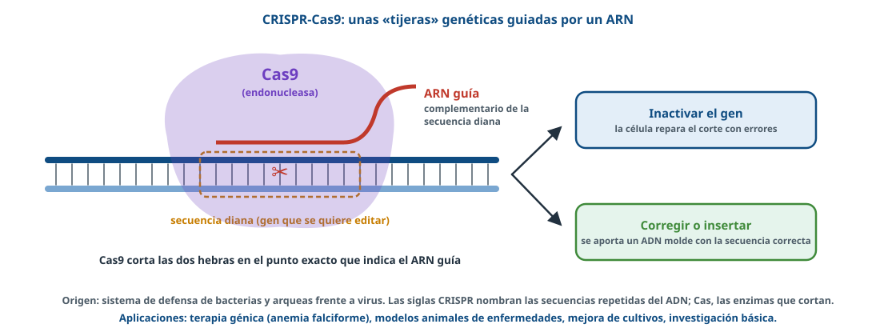
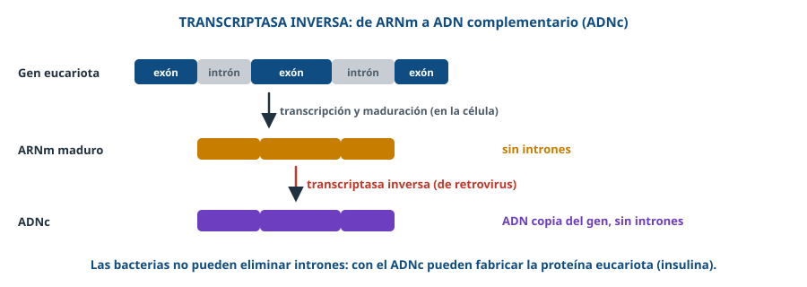
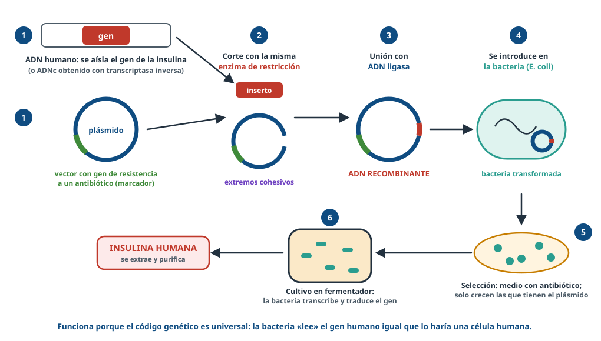
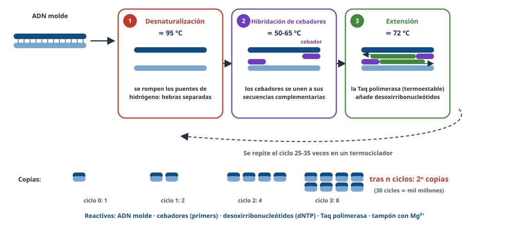
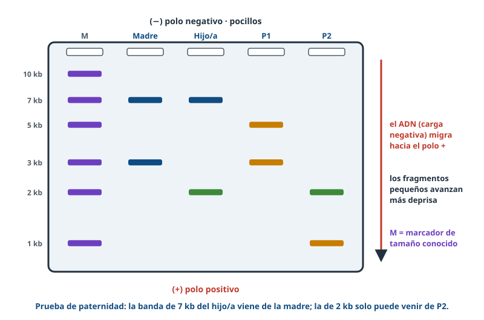
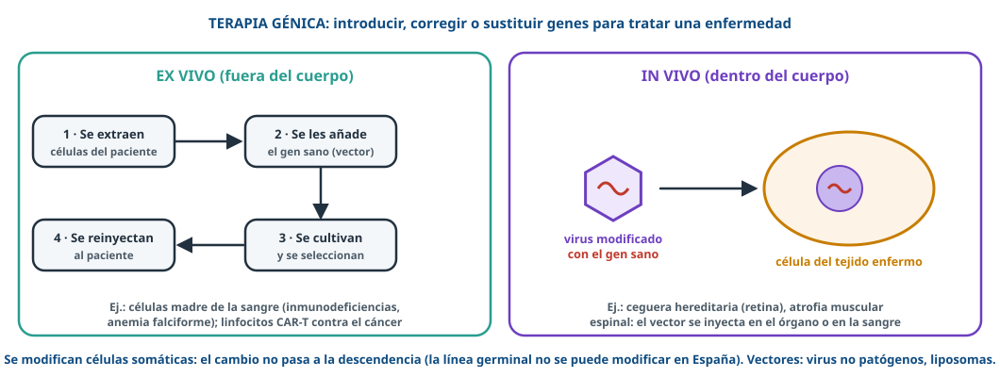

Cortar, pegar
y editar el ADN
Ingeniería genética: de la insulina en bacterias a CRISPR.
Usa ← → o el espacio para avanzar · F para pantalla completa
Directrices 26-27 · E.1¿Qué nos van a pedir?
Herramientas
Enzimas de restricción, ligasa, vectores, transcriptasa inversa, ADN recombinante.Técnicas
PCR y electroforesis (interpretar); CRISPR y secuenciación sin detalles técnicos.Aplicaciones
OMG y transgénicos, terapia génica, problemas sencillos.ConceptosOMG y transgénico
🧬 Ingeniería genética
Técnicas que permiten manipular y modificar el material genético.🌽 Transgénico ⊂ OMG
OMG: genoma modificado. Transgénico: lleva un gen de otra especie.HerramientasLas tijeras: enzimas de restricción

HerramientasPegamento y vehículos
ADN ligasa
Une fragmentos (enlaces fosfodiéster).Plásmidos
ADN circular bacteriano con gen de resistencia a un antibiótico.Bacteriófagos
Virus de bacterias. En eucariotas: virus modificados, liposomas.HerramientasTranscriptasa inversa: el ADNc

ADN recombinanteInsulina humana en bacterias

TécnicasLa PCR: fotocopiar ADN

TécnicasElectroforesis

- ADN con carga − → polo +.
- Pequeños más lejos.
- ¿Quién es el padre? P2: tiene la banda de 2 kb.
TécnicasSecuenciar: leer el ADN
- Determina el orden de los nucleótidos.
- Sin ella no podríamos diseñar cebadores (PCR) ni ARN guía (CRISPR).
- Localiza genes y sitios de restricción; compara muestras (diagnóstico, variantes de virus, forense).
EdiciónCRISPR-Cas9
BiomedicinaTerapia génica

AplicacionesOMG a nuestro alrededor
💊 Medicina
Insulina, hormonas, vacunas; ratones modelo de enfermedades.🌽 Agricultura
Maíz Bt, resistencia a herbicidas; trigo para celíacos (IAS-CSIC, Córdoba).🌍 Ambiente
Bacterias que degradan hidrocarburos y otros contaminantes.Problema¿Sabrías resolverlo?
✂️ EcoRI: 3 ↓ 4 ↓ 1 kb; HindIII: 2 ↓ 4,5 ↓ 1,5 kb. ¿Fragmentos con las dos? (PAU 2024)
Cortes en 2, 3, 6,5 y 7 kb → 5 fragmentos: 2, 1, 3,5, 0,5 y 1 kb.
🔥 ¿Por qué la Taq polimerasa y no una polimerasa humana?
Es termoestable: no se desnaturaliza a 95 ºC.
2ⁿ copias
de éxito
Repasa los apuntes y practica en Entrenamiento de BioCelia.